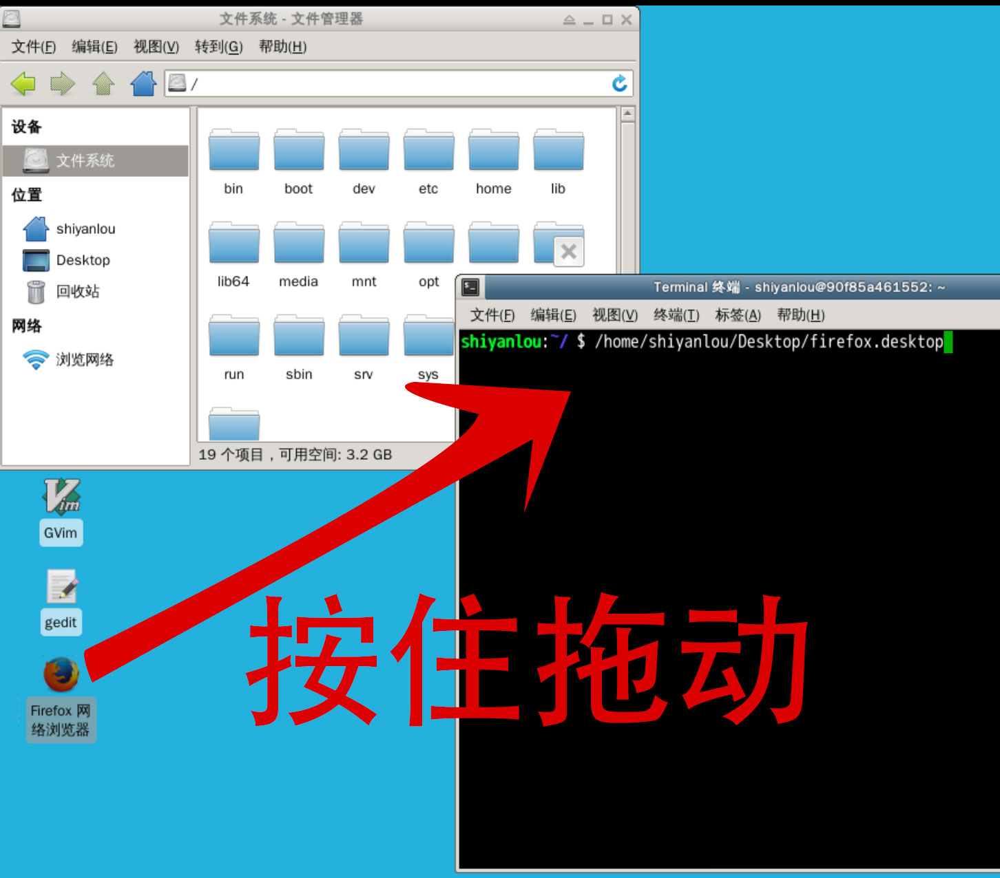

本章回顾
我们来回顾一下 😌
上一部分我们都讲了什么？🤔
- 讲了火狐 🦊
- 火狐的位置
- 用命令行打开多个网址
- 火狐 🦊 的升级
- 火狐 🦊 桌面建立快捷方式
那么我们可以知道桌面快捷方式文件的名称么？
从文件管理器 🗂 到命令行 📟

按住文件，拖动到 terminal📟 上面，这样我们就知道文件的绝对路径了。文件夹也可以拖动，我们也可以先打上命令，然后把文件作为参数拖动过来。
从命令行 📟 到文件管理器 🗂
我们首先在命令行的位置输入 pwd，把路径复制到剪贴板：

之后把路径粘贴到文件管理器的地址栏，这样就可以到达命令行所在的位置了。
也可以用 nautilus 命令打开文件管理器，让我们一起来看看吧～
nautilus
sudo apt update
sudo apt install nautilus
nautilus .
nautilus /etc
nautilus .打开当前路径nautilus /etc打开根下的 etc 文件夹
然后使用 ctrl+c 结束进程。
总结 🤨
- 这次了解了 gui（图形用户界面）和 cli（命令行界面）之间关系
- 可以把文件从 gui 拖到 cli
- 也可以吧 cli 的路径在 gui 中打开
- 了解了桌面上的快捷方式的本质是个文件
- 图形用户界面还有什么可玩的呢？
- 下次再说！👋